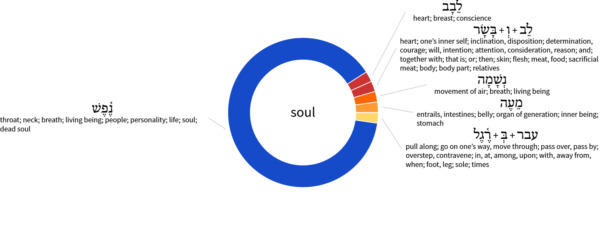

This is a companion piece to The Soul. I wanted to see every place the Old Testament actually uses the word “soul,” so I ran a Hebrew word study across the whole thing. It turns out “soul” in our English Bibles translates several different underlying Hebrew words, most of them clustered around one root: nephesh — a word that can mean throat, neck, breath, living being, person, life, or soul depending on context.

נֶ֫פֶשׁ (nephesh) — 39 occurrences
By far the dominant word, appearing in verses like the great commandment to love God “with all your heart and soul” (repeated across Deuteronomy and Joshua), David's oath “by your own soul,” and the psalmist's cry that his soul thirsts, despairs, or is refreshed:
- Deuteronomy 4:29 — But from there you will search again for the Lord your God. And if you search for him with all your heart and soul, you will find him.
- Deuteronomy 6:5 — And you must love the Lord your God with all your heart, all your soul, and all your strength.
- Deuteronomy 10:12 — “And now, Israel, what does the Lord your God require of you? He requires only that you fear the Lord your God, and live in a way that pleases him, and love him and serve him with all your heart and soul.
- Deuteronomy 11:13 — “If you carefully obey the commands I am giving you today, and if you love the Lord your God and serve him with all your heart and soul,
- Deuteronomy 13:3 — do not listen to them. The Lord your God is testing you to see if you truly love him with all your heart and soul.
- Deuteronomy 28:65 — There among those nations you will find no peace or place to rest. And the Lord will cause your heart to tremble, your eyesight to fail, and your soul to despair.
- Deuteronomy 30:2 — If at that time you and your children return to the Lord your God, and if you obey with all your heart and all your soul all the commands I have given you today,
- Deuteronomy 30:6 — “The Lord your God will change your heart and the hearts of all your descendants, so that you will love him with all your heart and soul and so you may live!
- Deuteronomy 30:10 — The Lord your God will delight in you if you obey his voice and keep the commands and decrees written in this Book of Instruction, and if you turn to the Lord your God with all your heart and soul.
- Joshua 22:5 — But be very careful to obey all the commands and the instructions that Moses gave to you. Love the Lord your God, walk in all his ways, obey his commands, hold firmly to him, and serve him with all your heart and all your soul.”
- Judges 5:21 — The Kishon River swept them away— that ancient torrent, the Kishon. March on with courage, my soul!
- 1 Samuel 20:3 — Then David took an oath before Jonathan and said, “Your father knows perfectly well about our friendship, so he has said to himself, ‘I won't tell Jonathan— why should I hurt him?’ But I swear to you that I am only a step away from death! I swear it by the Lord and by your own soul!”
- 1 Kings 2:4 — If you do this, then the Lord will keep the promise he made to me. He told me, ‘If your descendants live as they should and follow me faithfully with all their heart and soul, one of them will always sit on the throne of Israel.’
- 1 Kings 8:48 — If they turn to you with their whole heart and soul in the land of their enemies and pray toward the land you gave to their ancestors— toward this city you have chosen, and toward this Temple I have built to honor your name—
- 2 Kings 23:3 — The king took his place of authority beside the pillar and renewed the covenant in the Lord's presence. He pledged to obey the Lord by keeping all his commands, laws, and decrees with all his heart and soul. In this way, he confirmed all the terms of the covenant that were written in the scroll, and all the people pledged themselves to the covenant.
- 2 Kings 23:25 — Never before had there been a king like Josiah, who turned to the Lord with all his heart and soul and strength, obeying all the laws of Moses. And there has never been a king like him since.
- 1 Chronicles 22:19 — Now seek the Lord your God with all your heart and soul. Build the sanctuary of the Lord God so that you can bring the Ark of the Lord's Covenant and the holy vessels of God into the Temple built to honor the Lord's name.”
- 2 Chronicles 6:38 — If they turn to you with their whole heart and soul in the land of their captivity and pray toward the land you gave to their ancestors— toward this city you have chosen, and toward this Temple I have built to honor your name—
- 2 Chronicles 15:12 — Then they entered into a covenant to seek the Lord, the God of their ancestors, with all their heart and soul.
- 2 Chronicles 34:31 — The king took his place of authority beside the pillar and renewed the covenant in the Lord's presence. He pledged to obey the Lord by keeping all his commands, laws, and decrees with all his heart and soul. He promised to obey all the terms of the covenant that were written in the scroll.
- Job 7:11 — “I cannot keep from speaking. I must express my anguish. My bitter soul must complain.
- Job 10:1 — “I am disgusted with my life. Let me complain freely. My bitter soul must complain.
- Job 27:2 — “I vow by the living God, who has taken away my rights, by the Almighty who has embittered my soul—
- Psalm 13:2 — How long must I struggle with anguish in my soul, with sorrow in my heart every day? How long will my enemy have the upper hand?
- Psalm 16:10 — For you will not leave my soul among the dead or allow your holy one to rot in the grave.
- Psalm 19:7 — The instructions of the Lord are perfect, reviving the soul. The decrees of the Lord are trustworthy, making wise the simple.
- Psalm 31:7 — I will be glad and rejoice in your unfailing love, for you have seen my troubles, and you care about the anguish of my soul.
- Psalm 31:9 — Have mercy on me, Lord, for I am in distress. Tears blur my eyes. My body and soul are withering away.
- Psalm 63:1 — O God, you are my God; I earnestly search for you. My soul thirsts for you; my whole body longs for you in this parched and weary land where there is no water.
- Psalm 77:2 — When I was in deep trouble, I searched for the Lord. All night long I prayed, with hands lifted toward heaven, but my soul was not comforted.
- Psalm 116:7 — Let my soul be at rest again, for the Lord has been good to me.
- Psalm 131:2 — Instead, I have calmed and quieted myself, like a weaned child who no longer cries for its mother's milk. Yes, like a weaned child is my soul within me.
- Proverbs 3:22 — for they will refresh your soul. They are like jewels on a necklace.
- Proverbs 16:24 — Kind words are like honey— sweet to the soul and healthy for the body.
- Proverbs 22:25 — or you will learn to be like them and endanger your soul.
- Proverbs 24:12 — Don't excuse yourself by saying, “Look, we didn't know.” For God understands all hearts, and he sees you. He who guards your soul knows you knew. He will repay all people as their actions deserve.
- Proverbs 24:14 — In the same way, wisdom is sweet to your soul. If you find it, you will have a bright future, and your hopes will not be cut short.
- Jeremiah 6:16 — This is what the Lord says: “Stop at the crossroads and look around. Ask for the old, godly way, and walk in it. Travel its path, and you will find rest for your souls. But you reply, ‘No, that's not the road we want!’
- Ezekiel 13:18 — This is what the Sovereign Lord says: What sorrow awaits you women who are ensnaring the souls of my people, young and old alike. You tie magic charms on their wrists and furnish them with magic veils. Do you think you can trap others without bringing destruction on yourselves?
לֵבָב (lebab) — 1 occurrence
- Psalm 77:6 — when my nights were filled with joyful songs. I search my soul and ponder the difference now.
לֵב + בָּשָׂר (leb + basar) — 1 occurrence
- Psalm 84:2 — I long, yes, I faint with longing to enter the courts of the Lord. With my whole being, body and soul, I will shout joyfully to the living God.
נְשָׁמָה (neshamah) — 1 occurrence
- Isaiah 57:16 — For I will not fight against you forever; I will not always be angry. If I were, all people would pass away— all the souls I have made.
מֵעֶה (mea) — 1 occurrence
- Lamentations 1:20 — “Lord, see my anguish! My heart is broken and my soul despairs, for I have rebelled against you. In the streets the sword kills, and at home there is only death.
עבר + בְּ + רֶ֫גֶל (abar + be + regel) — 1 occurrence
- Ezekiel 29:11 — For forty years not a soul will pass that way, neither people nor animals. It will be completely uninhabited.
Textual search totals
For reference, here's how many times “soul” itself turns up across a few major translations of the whole Bible:
| New Living Translation | 74 results in 72 verses |
| English Standard Version | 283 results in 265 verses |
| Christian Standard Bible | 64 results in 62 verses |
| The Lexham English Bible | 208 results in 202 verses |
| New American Standard Bible (1995) | 303 results in 289 verses |
Companion post: The Soul: New Testament Word Study. Back to the main reflection: The Soul. — Erv
Comments